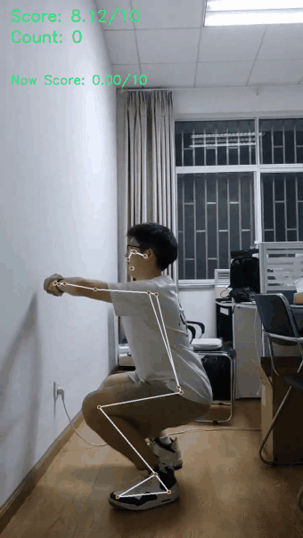
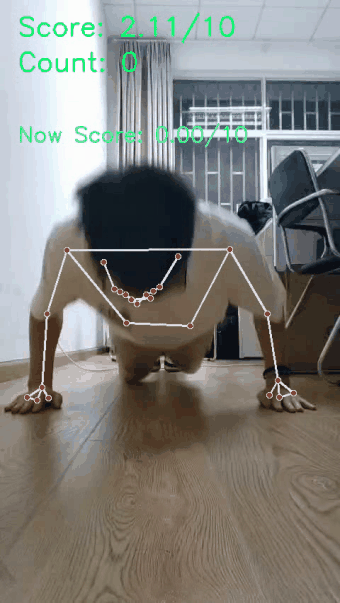
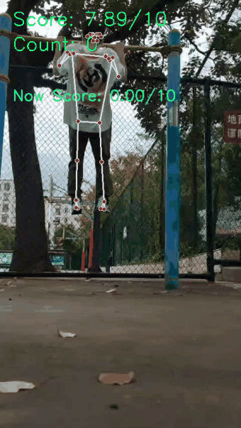
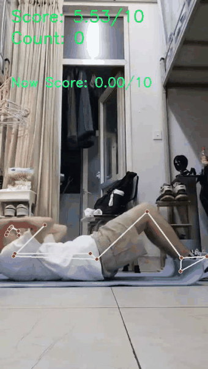

深蹲识别
膝关节与髋关节角度用于阶段判断。
实时姿态估计 · 动作计数 · 运动反馈
基于摄像头或视频输入进行人体关键点识别、关节角度计算、动作阶段判断、自动计数、评分和反馈展示。
四类动作统一按等比缩放展示，保留视频画面中的骨架、计数和反馈信息。

膝关节与髋关节角度用于阶段判断。

肩肘腕关键点用于计数和评分反馈。

背面姿态画面中识别肩臂动作变化。

肩髋膝角度用于起身与躺下阶段判断。


把实时视频画面转化为人体关键点序列，为动作判断提供稳定输入。
不同动作对应不同角度组合与阶段阈值，避免单帧误触发导致重复计数。
将分数、次数、热量和动作反馈组织到前端展示链路，形成可演示闭环。